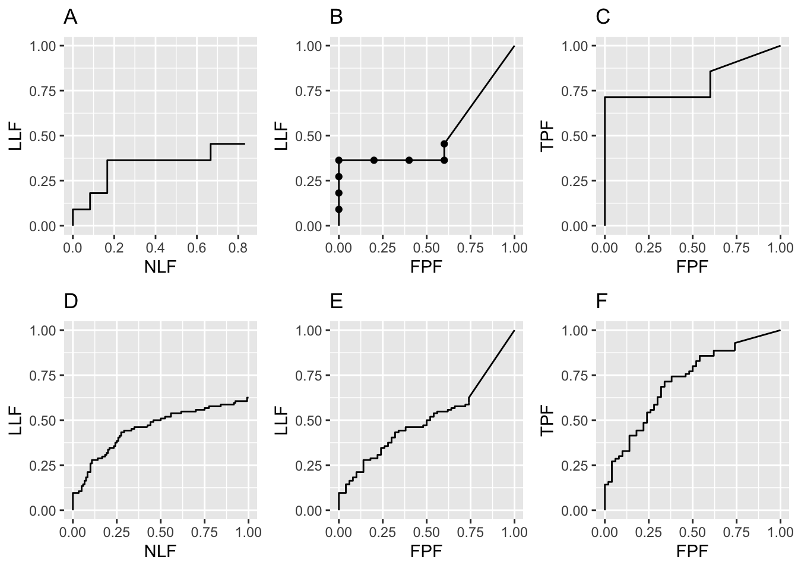
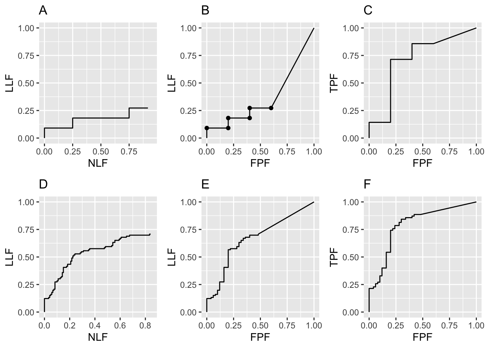
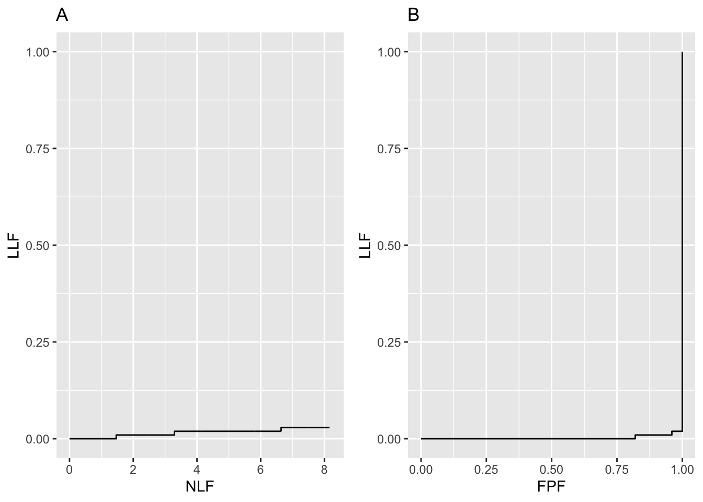
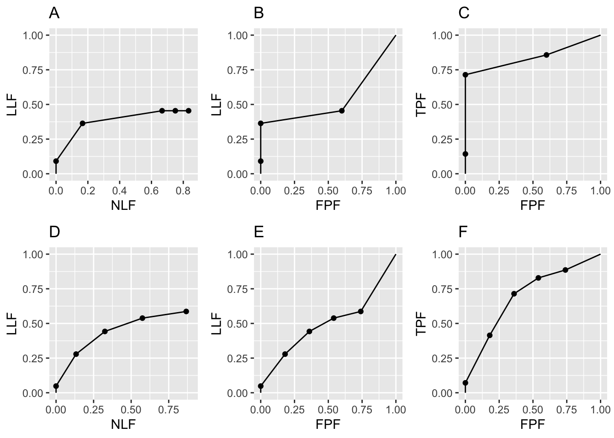
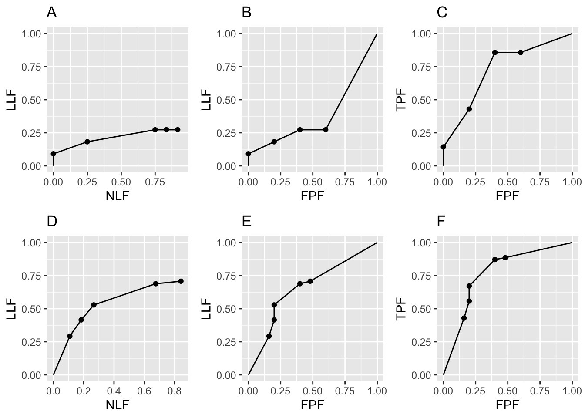

Chapter 22 Empirical plot examples
22.1 Introduction
The previous chapter introduced definitions and formulae for the various operating characteristics possible with FROC data. This chapter illustrates these definitions with numerical values and plots. The RSM simulator, introduced in Section 20.6, is used to generate FROC datasets under controlled conditions. Structure of the FROC dataset. TBA.
The starting point is the FROC plot.
22.2 Raw FROC/AFROC/ROC plots
Raw plots correspond to the actual simulator generated floating-point ratings, prior to any binning operation. If binning is employed the plots are termed binned plots. The FROC plots shown below were generated using the data simulator introduced in Chapter 20. The examples are similar to the population FROC curves shown in that chapter but the emphasis here is on understanding the FROC data structure. To this end smaller numbers of cases, not 20,000 as in the previous chapter, are used. Examples are given using smaller datasets. With a very small dataset, the logic of constructing the plot is more transparent but the operating points are more susceptible to sampling variability. The examples illustrate key points distinguishing the free-response paradigm from ROC. TBA
22.2.1 Code for raw plots
seed <- 1;set.seed(seed)
mu <- 1
lambda <- 1
nu <- 1
zeta1 <- -1
K1 <- 5
K2 <- 7
Lmax <- 2
Lk2 <- floor(runif(K2, 1, Lmax + 1))
frocDataRaw <- SimulateFrocDataset(
mu = mu,
lambda = lambda,
nu = nu,
I = 1,
J = 1,
K1 = K1,
K2 = K2,
perCase = Lk2,
zeta1 = zeta1,
seed = seed
)
p1A <- PlotEmpiricalOperatingCharacteristics(
dataset = frocDataRaw,
trts= 1, rdrs = 1, opChType = "FROC",
legend.position = "NULL")$Plot + ggtitle("A")
p1B <- PlotEmpiricalOperatingCharacteristics(
dataset = frocDataRaw,
trts= 1, rdrs = 1, opChType = "AFROC",
legend.position = "NULL")$Plot + ggtitle("B")
p1C <- PlotEmpiricalOperatingCharacteristics(
dataset = frocDataRaw,
trts= 1, rdrs = 1, opChType = "ROC",
legend.position = "NULL")$Plot + ggtitle("C")
frocDataRaw_1_5_7 <- frocDataRaw # seed 1, K1 = 5, K2 = 722.2.2 Explanation of the code
Line 1 sets the seed of the random number generator. Lines 2-5 set the simulator parameters \(\mu = 1, \lambda = 1, \nu = 1, \zeta_1 = -1\). Briefly, \(\mu\) determines the separation of two unit variance Gaussians, the one centered at zero determines the z-samples of latent NLs, while the one centered at \(\mu\) determines the z-samples of latent LLs. \(\lambda\) is the mean parameter of a Poisson distribution determining the number (a random non-negative integer) of latent NLs on each case while \(\nu\), the success probability of a binomial distribution, determines the number of latent LLs on each diseased case. A latent NL or LL is marked if its z-sample \(\geq \zeta_1\).
Lines 6-7 set the number of non-diseased cases \(K_1 = 5\) and the number of diseased cases \(K_2 = 7\).
Line 8 sets the maximum number of lesions per diseased case Lmax = 2. Line 9 randomly samples a uniform distribution to obtain the actual number of lesions per diseased case Lk2. The following code illustrates the process.
22.2.2.1 Number of lesions per diseased case
This shows that the first two diseased cases have one lesion each, the third and fourth have two lesions each, etc. The total number of lesions in the dataset is 11. The last two lines of the code snippet show that, even with a thousand simulations, the number of lesions per diseased case is indeed limited to Lmax = 2.
22.2.2.2 The structure of the FROC dataset
Lines 11-21 uses the function SimulateFrocDataset to simulate the dataset object frocDataRaw. Its structure is examined next:
str(frocDataRaw)
#> List of 3
#> $ ratings :List of 3
#> ..$ NL : num [1, 1, 1:12, 1:3] -Inf 0.487 0.738 0.576 -Inf ...
#> ..$ LL : num [1, 1, 1:7, 1:2] -Inf -Inf -0.238 1.919 -Inf ...
#> ..$ LL_IL: logi NA
#> $ lesions :List of 3
#> ..$ perCase: num [1:7] 1 1 2 2 1 2 2
#> ..$ IDs : num [1:7, 1:2] 1 1 1 1 1 ...
#> ..$ weights: num [1:7, 1:2] 1 1 0.5 0.5 1 ...
#> $ descriptions:List of 7
#> ..$ fileName : chr "NA"
#> ..$ type : chr "FROC"
#> ..$ name : logi NA
#> ..$ truthTableStr: logi NA
#> ..$ design : chr "FCTRL"
#> ..$ modalityID : chr "1"
#> ..$ readerID : chr "1"It is seen to consist of three list members: ratings, lesions and descriptions.
22.2.2.3 The structure of the ratings member
The ratings member is itself a list of 3, consisting of NL the non-lesion localization ratings, LL the lesion localization ratings and LL_IL the incorrect localization ratings. The last member is needed for LROC datasets and can be ignored for now.
22.2.2.4 The structure of the NL member
frocDataRaw$ratings$NL[1,1,,]
#> [,1] [,2] [,3]
#> [1,] -Inf -Inf -Inf
#> [2,] 0.48742905 -Inf -Inf
#> [3,] 0.73832471 -Inf -Inf
#> [4,] 0.57578135 -0.3053884 -Inf
#> [5,] -Inf -Inf -Inf
#> [6,] 1.51178117 0.3898432 -Inf
#> [7,] 1.12493092 -0.6212406 -Inf
#> [8,] -0.04493361 -Inf -Inf
#> [9,] -0.01619026 -Inf -Inf
#> [10,] -Inf -Inf -Inf
#> [11,] -Inf -Inf -Inf
#> [12,] -Inf -Inf -InfIt is seen to be an array with dimensions [1,1,1:12,1:4].
Note that all listed ratings are greater than \(\zeta_1 = -1\). Unmarked locations are assigned the \(-\infty\) rating.
Case 1, the first non-diseased case, has a single
NLmark rated - and the remaining 3 locations are filled with \(-\infty\)s.Case 6, the first diseased case, has zero
NLmarks and all 4 locations for it are filled with \(-\infty\)s. [As seen below, this case actually generated a rating in the first location, but it fell below \(\zeta_1 = -1\).]Case 11, the sixth diseased case, has three
NLmarks rated -, -, - and the remaining location for it is \(-\infty\). As noted below, this case generated a fourth rating that fell below \(\zeta_1 = -1\).The first dimension corresponds to the number of modalities, one in this example, the second dimension corresponds to the number of readers, also one in this example.
The third dimension is the total number of cases, \(K_1+K_2 = 12\) in this example, because NLs are possible on both non-diseased and diseased cases.
The fourth dimension is 4, as the simulator generates, over 12 cases, a maximum of 4 latent NLs per case. This can be demonstrated (see below) by running the preceding code where one temporarily sets \(\zeta_1 = -\infty\), which results in all latent marks being marked: one sees that case 11, the sixth diseased case, actually generates 4 NLs, but one of them, at position 4, has rating equal to -1.237538, which is less than \(\zeta_1 = -1\), and is consequently not marked in the original example, i.e., this location is assigned a rating of \(-\infty\).
frocDataRaw1$ratings$NL[1,1,,]
#> [,1] [,2] [,3]
#> [1,] -Inf -Inf -Inf
#> [2,] 0.48742905 -Inf -Inf
#> [3,] 0.73832471 -Inf -Inf
#> [4,] 0.57578135 -0.3053884 -Inf
#> [5,] -Inf -Inf -Inf
#> [6,] 1.51178117 0.3898432 -Inf
#> [7,] 1.12493092 -0.6212406 -2.2147
#> [8,] -0.04493361 -Inf -Inf
#> [9,] -0.01619026 -Inf -Inf
#> [10,] -Inf -Inf -Inf
#> [11,] -Inf -Inf -Inf
#> [12,] -Inf -Inf -Inf22.2.2.5 The structure of the LL member
frocDataRaw$ratings$LL[1,1,,]
#> [,1] [,2]
#> [1,] -Inf -Inf
#> [2,] -Inf -Inf
#> [3,] -0.2375384 -Inf
#> [4,] 1.9189774 -Inf
#> [5,] -Inf -Inf
#> [6,] 1.0745650 -Inf
#> [7,] 1.5036080 0.9428932It is seen to be an array with dimensions
[1,1,1:7,1:2].The first dimension corresponds to the number of modalities, one in this example, the second dimension corresponds to the number of readers, also one in this example.
The third dimension is the total number of diseased cases, \(K_2 = 7\), because LLs are only possible on diseased cases.
The fourth dimension is 2, as the maximum number of lesions per diseased case is
Lmax= 2.Note that all listed ratings are greater than \(\zeta_1 = -1\).
Case 1, the first diseased case, has zero
LLmarks and both locations are filled with \(-\infty\)s.Case 2, the second diseased case, has one
LLmark rated - and the remaining location is \(-\infty\).Case 7, the seventh diseased case, has two
LLmarks rated 1.503608, 0.9428932 and zero locations with \(-\infty\).The following output shows that setting \(\zeta_1 = -\infty\) does not reveal any more latent LLs.
frocDataRaw1$ratings$LL[1,1,,]
#> [,1] [,2]
#> [1,] -Inf -Inf
#> [2,] -Inf -Inf
#> [3,] -0.2375384 -Inf
#> [4,] 1.9189774 -Inf
#> [5,] -Inf -Inf
#> [6,] 1.0745650 -Inf
#> [7,] 1.5036080 0.9428932Lines 23 - 25 use the
PlotEmpiricalOperatingCharacteristicsfunction to calculate the FROC plotggplotobject, which is saved top1A. Note the argumentopChType = "FROC", for the desired FROC plot.Lines 28 - 31 use the
PlotEmpiricalOperatingCharacteristicsfunction to calculate the AFROC plot object, which is saved top1B. Note the argumentopChType = "AFROC".Finally, lines 33 - 35 use the
PlotEmpiricalOperatingCharacteristicsfunction to calculate the ROC plot object, which is saved top1C. Note the argumentopChType = "ROC".
In summary, the code generates FROC, AFROC and ROC plots shown in the top row of Fig. 22.1, labeled A, B and C. The discreteness, i.e., the relatively big jumps between data points, is due to the small numbers of cases. Increasing the numbers of cases to \(K_1 = 50\) and \(K_2 = 70\) yields the lower row of plots in Fig. 22.1, labeled D, E and F. The fact that the upper row left plot does not seem to match the lower row left plot, especially near NLF = 0.25, is due to sampling variability with few cases.

FIGURE 22.1: Raw FROC, AFROC and ROC plots with seed = 1: Plots A, B, C are for \(K_1 = 5\) and \(K_2 = 7\) cases while plots D, E, F are for \(K_1 = 50\) and \(K_2 = 70\) cases.
Fig. 22.1 Raw FROC, AFROC and ROC plots with seed = 1: Plots A, B and C are for \(K_1 = 5\) and \(K_2 = 7\) cases while D, E and F are for \(K_1 = 50\) and \(K_2 = 70\) cases. Model parameters are \(\mu\) = 1, \(\lambda\) = 1, \(\nu\) = 1 and \(\zeta_1\) = -1. The discreteness (jumps) in A, B and C is due to the small number of cases. The decreased discreteness in D, E and F is due to the larger numbers of cases. If the number of cases is increased further, the plots will approach continuous plots, like those shown in Chapter 20. Note that the AFROC (B and E) and ROC plots (C and F), are each contained within unit squares, unlike the semi-constrained FROC plots A and D.
22.2.2.6 Effect of seed on raw plots
Shown next are similar plots but this time seed = 2.

FIGURE 22.2: Raw FROC, AFROC and ROC plots with seed = 2: Plots A, B, C are for \(K_1 = 5\) and \(K_2 = 7\) cases while plots D, E, F are for \(K_1 = 50\) and \(K_2 = 70\) cases.
Fig. 22.2 Raw FROC, AFROC and ROC plots with seed = 2: Plots A, B, C are for \(K_1 = 5\) and \(K_2 = 7\) cases while plots D, E, F are for \(K_1 = 50\) and \(K_2 = 70\) cases. Model parameters are \(\mu\) = 1, \(\lambda\) = 1, \(\nu\) = 1 and \(\zeta_1\) = -1. Note the large variability in the upper row plots as compared to those in Fig. 22.1.
22.2.3 Key differences from the ROC paradigm:
In a ROC study, each case generates exactly one rating.
In a FROC study, each case can generate zero or more (0, 1, 2, …) mark-rating pairs.
The number of marks per case is a random variable as is the rating of each mark.
Each mark corresponds to a distinct location on the image and associated with it is a rating, i.e., confidence level in presence of disease at the region indicated by the mark.
In the ROC paradigm, each non-diseased case generates one FP and each diseased case generates one TP.
In a FROC study, each non-diseased case can generate zero or more NLs and each diseased case can generate zero or more NLs and zero or more LLs.
The number of lesions in the case limits the number of LLs.
22.3 The chance level FROC and AFROC
The chance level FROC was addressed in the previous chapter; it is a “flat-liner”, hugging the x-axis, except for a slight upturn at large NLF.

FIGURE 22.3: Plot A is the near guessing observer’s FROC and plot B is the corresponding AFROC for \(\mu=0.01\).
Fig. 22.3 shows “near guessing” FROC (plot A) and AFROC (plot B) plots for \(\mu = 0.1\). These plots were generated by the code with \(\mu\) = 0.1, \(\lambda\) = 1, \(\nu\) = 0.1, \(\zeta_1\) = -1, \(K_1\) = 50, \(K_2\) = 70.
The AFROC of a guessing observer is not the line connecting (0,0) to (1,1). A guessing observer will also generate a “flat-liner”, but this time the plot ends at FPF = 1, and the straight line extension will be a vertical line connecting this point to (1,1). In the limit \(\mu \rightarrow 0+\), AFROC-AUC tends to zero.
To summarize, AFROC AUC of a guessing observer is zero. On the other hand, suppose an expert radiologist views screening images and the lesions on diseased cases are very difficult, even for the expert, and the radiologist does not find any of them. Being an expert the radiologist successfully screens out non-diseased cases and sees nothing suspicious in any of them – this is a measure of the expertise of the radiologist, not mistaking variants of normal anatomy for false lesions on non-diseased cases. Accordingly, the expert radiologist does not report anything, and the operating point is “stuck” at the origin. Even in this unusual situation, one would be justified in connecting the origin to (1,1) and claiming area under AFROC is 0.5. The extension gives the radiologist credit for not marking any non-diseased case; of course, the radiologist does not get any credit for marking any of the lesions. An even better radiologist, who finds and marks some of the lesions, will score higher, and AFROC-AUC will exceed 0.5. See TBA §17.7.4 for a software demonstration of this unusual situation.
22.4 Location-level “true-negatives”
The quotes are intended to draw attention to confusion that can result when one inappropriately applies ROC terminology to the FROC paradigm. For the 5 / 7 dataset, seed = 1, and reporting threshold set to -1, the first non-diseased case has one NL rated -. The remaining three entries for this case are filled with \(-\infty\).
What really happened is only known if one has access to the internals of the simulator. To the data analyst the following possibilities are indistinguishable:
- Four latent NLs, one of whose ratings exceeded \(\zeta_1\), i.e., three location-level “true negatives” occurred on this case.
- Three latent NLs, one of whose ratings exceeded \(\zeta_1\), i.e., two location-level “true negatives” occurred on this case.
- Two latent NLs, one of whose ratings exceeded \(\zeta_1\), i.e., one location-level “true negative” occurred on this case.
- One latent
NL, whose rating exceeded \(\zeta_1\), i.e., 0 location-level “true negatives” occurred on this case.
The second non-diseased case has one NL mark rated 0.4874291 and similar ambiguities occur regarding the number of latent NLs. The third, fourth and fifth non-diseased cases have no marks. All four locations-holders on each of these cases are filled with \(-\infty\), which indicates un-assigned values corresponding to either absence of any latent NL or presence of one or more latent NLs that did not exceed \(\zeta_1\) and therefore did not get marked.
To summarize: absence of an actual NL mark, indicated by a \(-\infty\) rating, could be due to either (i) non-occurrence of the corresponding latent NL or (ii) occurrence of the latent NL but its rating did not exceed \(\zeta_1\). One cannot distinguish between the two possibilities, as in either scenario, the corresponding rating is assigned the \(-\infty\) value and either scenario would explain the absence of a mark.
For those who insist on using ROC terminology to describe FROC data the second possibility would be termed a location level True Negative (“TN”). Their “logic” is as follows: there was the possibility of a NL mark, which they term a “FP”, but the observer did not make it. Since the complement of a FP event is a TN event, this was a TN event. However, as just shown, one cannot tell if it was a “TN” event or there was no latent event in the first place. Here is the conclusion: there is no place in the FROC lexicon for a location level “TN”.
If \(\zeta_1\) = \(-\infty\) then all latent marks are actually marked and the ambiguities mentioned above disappear. As noted previously, when this change is made one confirms that there were actually four latent NLs on the sixth diseased case (the eleventh sequential case), but the one rated -1.237538 fell below \(\zeta_1 = -1\) and was consequently not marked.
So one might wonder, why not ask the radiologists to report everything they see, no matter now low the confidence level? Unfortunately, that would be contrary to their clinical task, where there is a price to pay for excessive NLs. It would also be contrary to a principle of good experimental design: one should keep interference with actual clinical practice, designed to make the data easier to analyze, to a minimum.
22.5 Binned FROC/AFROC/ROC plots
In the preceding example, continuous ratings data was available and data binning was not employed. Shown next is the code for generating the plots when the data is binned.
22.5.1 Code for binned plots
seed <- 1;set.seed(seed)
mu <- 1
zeta1 <- -1
K1 <- 5
K2 <- 7
Lmax <- 2
Lk2 <- floor(runif(K2, 1, Lmax + 1))
frocDataRaw <- SimulateFrocDataset(
mu = mu,
lambda = lambda,
nu = nu,
I = 1,
J = 1,
K1 = K1,
K2 = K2,
perCase = Lk2,
zeta1 = zeta1,
seed = seed
)
frocDataBinned <- DfBinDataset(
frocDataRaw,
desiredNumBins = 5,
opChType = "FROC")
p4A <- PlotEmpiricalOperatingCharacteristics(
dataset = frocDataBinned,
trts= 1, rdrs = 1, opChType = "FROC",
legend.position = "NULL")$Plot + ggtitle("A")
p4B <- PlotEmpiricalOperatingCharacteristics(
dataset = frocDataBinned,
trts= 1, rdrs = 1, opChType = "AFROC",
legend.position = "NULL")$Plot + ggtitle("B")
p4C <- PlotEmpiricalOperatingCharacteristics(
dataset = frocDataBinned,
trts= 1, rdrs = 1, opChType = "ROC",
legend.position = "NULL")$Plot + ggtitle("C")This is similar to the code for the raw plots except that at lines 21-24 we have used the function DfBinDataset to bin the raw data frocDataRaw and the binned data is saved to frocDataBinned, which is used in the subsequent plotting routines. Note the arguments desiredNumBins and opChType. The binning function needs to know the desired number of bins (set to 5 in this example) and the operating characteristic that the binning is aimed at (here set to “FROC”).

FIGURE 22.4: Binned FROC, AFROC and ROC plots with seed = 1: Plots A, B, C are for \(K_1 = 5\) and \(K_2 = 7\) cases while plots D, E, F are for \(K_1 = 50\) and \(K_2 = 70\) cases
22.5.2 Effect of seed on binned plots
Shown next are corresponding plots with seed = 2.

FIGURE 22.5: Binned FROC, AFROC and ROC plots with seed = 2: Plots A, B, C are for \(K_1 = 5\) and \(K_2 = 7\) cases while plots D, E, F are for \(K_1 = 50\) and \(K_2 = 70\) cases
22.6 Structure of the binned data
str(frocDataBinnedSeed1$ratings$NL)
#> num [1, 1, 1:120, 1:4] -Inf 4 2 3 -Inf ...
table(frocDataBinnedSeed1$ratings$NL)
#>
#> -Inf 1 2 3 4
#> 376 35 30 23 16
sum(as.numeric(table(frocDataBinnedSeed1$ratings$NL)))
#> [1] 480- The
table()function converts an array into a counts table. - There are 120 x 4 = 480 elements in the
NLarray to be “tabled”. - From the output one sees that there are 378 entries in the
NLarray that equal \(-\infty\), 50 that equal 1, 15 that equal 2, 12 that equal 3, and 25 that equal 4 (none of the NLs were binned into the rating “5” category). These sum to 480 (see code output above). - Because the fourth dimension of the
NLarray is determined by cases with the most NLs, on the unknown number (to the data analyst) of cases with fewer NLs, this dimension is “padded” with negative-infinities.
- Because of the unknown number of negative-infinity paddings, one does not know how many of the 378 observed negative-infinities are actually latent NLs. The actual number of latent NLs could be considerably smaller - and the number of marked NLs even smaller - as this is determined by those latent NLs whose z-samples \(\geq \zeta_1\). Notice that in the special case \(\zeta_1 = -\infty\) the observer marks all latent NL, in which case the observed count equal the actual count.
str(frocDataBinnedSeed1$ratings$LL)
#> num [1, 1, 1:70, 1:2] 3 4 4 4 3 ...
table(frocDataBinnedSeed1$ratings$LL)
#>
#> -Inf 1 2 3 4 5
#> 79 5 10 17 24 5
sum(as.numeric(table(frocDataBinnedSeed1$ratings$LL)))
#> [1] 140
sum(Lk2Seed1)
#> [1] 104
sum(Lk2Seed1) - sum(as.vector(table(frocDataBinnedSeed1$ratings$LL))[2:6])
#> [1] 43- The
LLarray contains 70 x 2 = 140 values to be “tabled”. - From the output one sees that there are 78 entries in the
LLarray that equal \(-\infty\), 10 entries that equal 1, 5 entries that equal 2, 8 entries that equal 3, 35 entries that equal 4, and 4 entries that equal 5. These sum to 140, the product of the lengths of the third and fourth dimensions of theLLarray. - The number of negative-infinity counts is 78. This is smaller than 140 because, of the varying numbers of lesions, some of the location-holders are filled with negative infinities.
- The known total number of lesions – each of which contributes a latent
LL– is 104, see 2nd last line of above code output.
- Summing the
LLcounts in bins 1 through 5 (corresponding to table columns 2-6, since column 1 applies to the negative-infinities) and subtracting from the total number of lesions one gets: 104 – (10+5+8+35+4) = 104 – 62 = 42, see last line of above code output. - Therefore, the number of unmarked lesions is 42. The listed value (78) is an overestimate because it includes the \(-\infty\) counts from the fourth dimension negative-infinity “padding” of the
LLarray.
22.7 Summary
The preceding detailed example illustrates a key point: The total number of latent NLs in the dataset is generally unknown to the data analyst, unlike the total number of latent LLs, which is known. The only exception to this rule is if \(\zeta_1 = -\infty\), in which case the observer marks all latent NL (and LL) sites.
22.8 Discussion
TBA